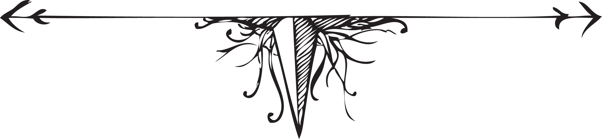
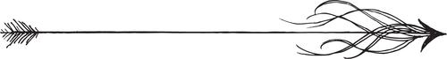

Curing the Pirate Pig
by Just Kibbe
My goal was to deconstruct the novel’s form into a collection of maps and artifacts that show the story of rural ghosts, long gone but not far-gone from the American landscape. The graphic novel is a conceptual trampoline. So are the theatrical arts of costume, set and prop design. It belongs in the post-digital art movement. I created this story as a reaction to technology and with the desire to control my life by living in a fictionalized history. I wanted to mythologize my future.
Some call it fictional anthropology.
BIG HEADS. BIGGER BELLIES. BLACK EYES. STICK FISTS. One of four maps representing the Kingdom of Festive Mothers, on which are plotted events, locations, people and artifacts that have been unburied to date.
LET THE RABBIT FLAG UNFURL. GREASE. SALT. SUGAR. CAFFEINE FOR YOUR EARS. One of four maps misrepresenting the Kingdom of Festive Mothers, on which are plotted events, locations, people and artifacts that have been unburied to date.
LAND OF LOVE AND LEVIATHANS. One of four maps presenting the Kingdom of Festive Mothers, on which are plotted events, locations, people and artifacts that have been unburied to date.
KINDGOM OF FESTIVE MOTHERS: YE DARE NOT ENTER. One of four maps re-presenting the Kingdom of Festive Mothers, on which are plotted events, locations, people and artifacts that have been unburied to date.

#1
#2
#3
#4 Scars and Mischief
#5 Chicken Enchilada Yolanda Pot Pie
#6 Egg Poems
#7
Steve Stevenson
#1. Daily Philosophical Findings Report wherein Steve Stevenson alludes to his motive for making Chicken Enchilada Yolanda Pot Pie and references the location Hill of Beans, found on the map titled “LAND OF LOVE AND LEVIATHANS.”
Thomas Edgely Wallace
#2. Daily Philosophical Findings Report wherein Edgely relates the first encounter with the elite and unknowable H. Bloom at City of Myself, located on the map titled “LAND OF LOVE AND LEVIATHANS”.
Ward A. Cylum
#3. Human Consciousness Termination Report wherein Ward A. Cylum discovers the termination of Yolanda at City of Myself, found on the map titled “LAND OF LOVE AND LEVIATHANS.” Cylum examines the evidence of Yolanda’s termination and speculates as to the size of impact.
#4. Found in the ashes of Rubik Outpost, located on the map titled “BIG HEADS. BIGGER BELLIES. BLACK EYES. STICK FISTS.” Inscription reads, “I give you the power to smite with scars and mischief from branch to root to trunk to truth. If any human harm you, fire will lick their nostrils, and kiss their nostrils, burning everything they touch, skin black and crisp.”
#5. Recipe Card found near Rooster Reflection Lake, located on the map titled “BIG HEADS. BIGGER BELLIES. BLACK EYES. STICK FISTS.” Recipe is assumed to have been written by T. E. Wallace, aka Tom-Tom, aka Jelly Waste.
#6. Photograph of eggs collected from the banks of Little Lost Bird Lake, located on the map titled “LET THE RABBIT FLAG UNFURL.”
#7. Official Kingdom of Festive Mothers telegram from T.E. Wallace that is nothing less than full of death. The telegram was found at City of Noself, located on the map titled “LAND OF LOVE AND LEVIATHANS.” The intended destination is a matter of debate, so it is unknown if it ever reached its intended audience.

Just Kibbe poetry, essays, short fiction, cartoons and visual art have been published internationally in a variety of mediums. He received his MFA from Saint Mary’s College of California and currently teaches English and Composition classes for the Incarcerated Student Program at Feather River College in Quincy, California. Kibbe was a founding board member of Indelible Ink, a literary performance series. From 2005–2013, he was associate publisher and managing editor of THE Magazine in Pasadena, California. Kibbe designed and produced the Baby Obama Doll (limited edition of 500), which uses toy and packaging to make an interactive poetic statement about Americans’ relationships to political media. The doll was purchased by the University of Texas at Tyler University for their Archives and Special Collections of Historic Political Memorabilia. In 2013, Kibbe received a grant from the Pasadena Arts & Culture Commission to film the sign language translation of his Text Message Acronym Poems; the film, Elite Speaking Turquoise Monkey, premieres on June 10, 2014, at the Pasadena Playhouse.